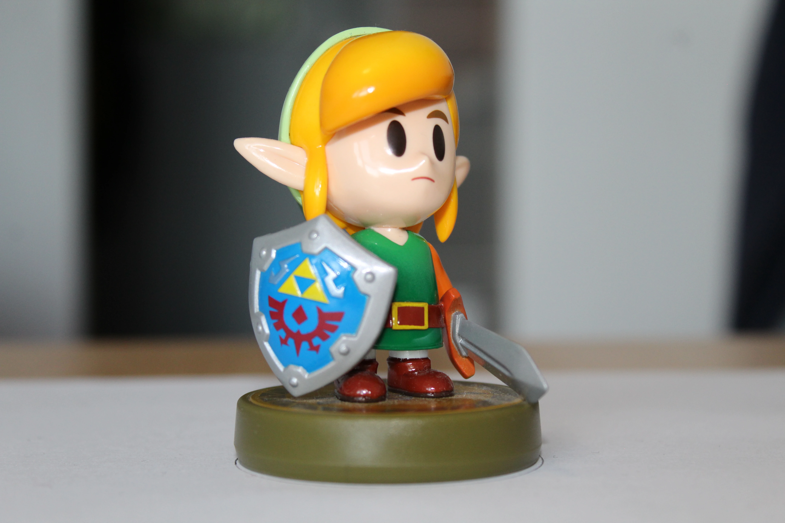
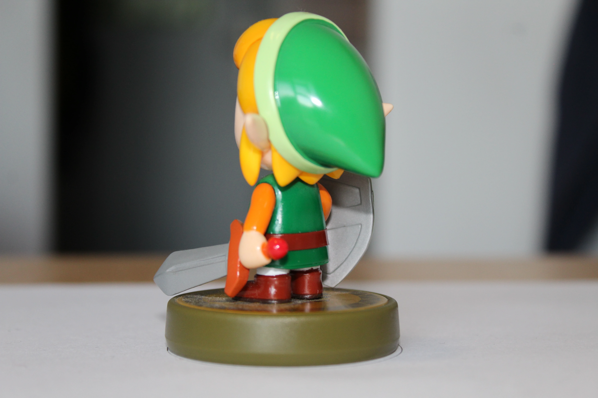

V okviru zadnje naloge smo dobili nalogo za izdelavo 3D objekta s pomočjo fotogrametrije. Za izdelavo slednjega smo uporabili preizkusno različico programa Agisoft Metashape. Koncept sledeče metode je v tem, da objekt mnogokrat fotografiraš na različnih ravninah v celotnem 360° krogu. Več je fotografij, večja je natančnost ustvarjenega objekta. Program nato izračuna glede na kote in ozadje, kje so glavne točke objekta, ki ga želimo zajeti. Nato nam ustvari 3D mrežo objekta, ki jo lahko še nadalje popravimo ali poenostavimo. Nato sestavimo ta objekt, ustvarimo ustrezno teksturo iz izračunanih površin in objekt nato izvozimo v .obj formatu. Da bi lažje prikazali tako kompleksen predmet smo ga naložili na Sketchfab, ki omogoča ogled 3D objektov podobno kot X3DOM.

Fotografija Amiibo figurice Linka iz serije Legenda o Zeldi. Prikazana fotografija je zajeta bolj od spredaj.

Še en pogled na figurico od zadaj.

Postopek izdelave s programom Agisoft MetaShape.

Končni izdelek

Izdelovanje texture

Prvotni render objekta
Link Figurine by acrysius on Sketchfab
3D objekt .obj datotečnega formata, naložen na Sketchfab. Kot je razvidno, je kapica zaradi odsevne površine utrpela nekaj nenatančno določenih točk in izgleda precej udrto. Osebno smo mnenja, da je izdelek še vedno dobro izpadel in je dokaj prisrčen.